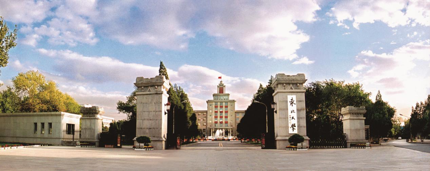

We have established the collaborative relationship with Jilin_China NEFU_China XJTLU_CHINA and SYSU-MEDICINE during the competition. However, we thought that the universities mentioned above have helped us a lot more than we have returned because of our first time to participate that contest and lacking of experience.
We have invited some predecessors coming from the North east Forestry University to introduce iGEM competition to us. It was a very cherish chance for us to know iGEM closely and diverse ideas proposed by the teams coming from all over the word, which made us very excited. So, students who were from North east Forestry gave us the first lesson about the competition and they guided us to solve some troubles we met at the beginning of registration such as registering on the web, remitting by wire transfer, filling in the form correctly and so on. So, we are very appreciated for their selfless help and efficient guides.
In addition, our team is also ready to help others and glad to communicate with other teams. We has provided some essential reagents and plasmid to other team after verifying them right. We provided LUDOX - an interlab reagent to XJTLU_CHINA as soon as they asked. Since we didn’t join in the plan of interlab experiment , we thought that there might be some requirements of interlab reagents or plasmid. So, we pronounced the case that we could provided our materials in the communication platform. With the competition going on, Jinlin_China had asked us for some materials and then we send them the Test Device 3: J23117.B0034.E0040.B0015 in pSB1C3 and the FITC Standard. We were pleasure to gave them a hand when they need help and that interaction led a more closely communication between us. We have often exchange some experience and experimental skills up to now. More information can be found in ..........At the very beginning of the competition, we had received a tube of plasmid provided by NAU-CHINA before DNA kits’ arriving. That solution contained the pSB1C3 plasmid backbone which could be used to submit parts. We were so grateful for that kindness behavior because we had nothing but the pSB1C3 at that time.
As for the aspect of experimental, we have cooperated with the SYSU-MEDICINE in modeling. We asked for .............A well-designed method was proposed based on the data they had fed back. More details are described as follows:
What’s more, we were seeking for an experimental cooperation positively until an active team - FAFU-CHINA - stepped into our eyesight. What they were doing really aroused our interests. In the later time,some students of us answered the survey they did and contacted with them full of enthusiasm. Then, we proposed that we could help each other to solve some troubles on experimental. So, we send them some plasmids which should be transformed into yeast ,hoping for their generous cooperation. We hoped them to test if the tCas9-CIBN protein we created would be expressed in yeast. The result we concluded was unsatisfactory. We were eager to get their feedback to compare with our idea. Well, facts proved that they were indeed an enthusiastic and efficient team! The feedback they gave had helped us to understand the results better. Of course, we had also performed a series experiments for FAFU-CHINA...........